Introduction to Risk & SAP GRC Evolution
What is Risk?
Something that impacts your business — either financially or reputationally.
- Probability – Chances of occurrence (based on experience/knowledge)
- Risk is not universal – It varies by company and location
SAP GRC Tool Evolution
Risk Management Framework
Risk Analysis — Find what risks exist
Remove or Avoid — Eliminate the risk
Reduce Impact — Lessen the damage
Risk Types in SAP GRC ARA
Segregation of Duties Risk
Combination of conflicting functions. Occurs when duties that should be separated are assigned to one user.
SU01 + PFCG SCC4 + STMS
- T1 Display + T2 Display
- T1 Full + T2 Display
- T1 Display + T2 Full
- T1 Full + T2 Full → Highest Risk
Critical Action Risk
A single transaction that is itself sensitive or dangerous.
SCC4 SCC5 SE38 SPRO STMS
Critical Permission Risk
Sensitive authorization object + field + value combinations.
SCC4: S_TABU_DIS with Activity 01 or 02
SE38: S_DEVELOP with Activity 01 or 02
Risk Levels (based on business impact)
Global Rule Set & Custom Rule Set
What is the Global Rule Set?
SAP studied famous companies worldwide across domains (Banking, Automobile, Retail, etc.) and documented risks faced over the last 100 years — divided by process (Finance, HR, Sales...).
Global Rule Set Flow
Steps to Create a Custom Rule Set
NWBC → SET UP → Access Rule Maintenance → Rule Set
SPRO → GRC → Access Control → Maintain Business Process and Sub Processes
NWBC → SET UP → Access Rule Maintenance → Functions
Creating a SoD Risk — Step-by-Step
BENZ_USER1 has two roles — Security Admin (SU01, PFCG, PFUD) and Client Admin (SCC4, SCC5, SCC7, SCC1). This is a SoD violation because both conflicting duties are held by one person.
After creating users and roles in the ECC system, run the sync job via SPRO:
SPRO → GRC → Access Control → Sync Job → Repository Object Sync
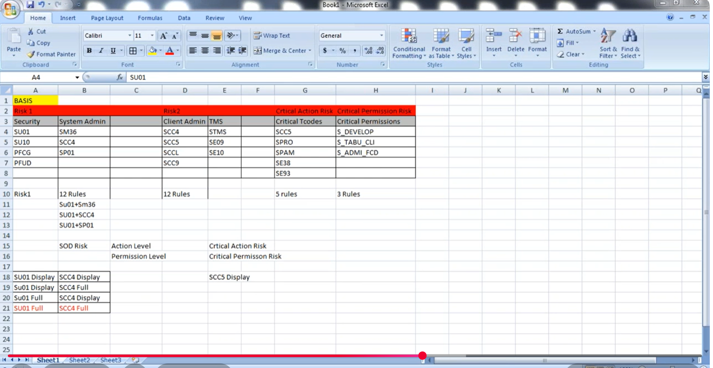
Use T-Code SM37 to check whether the sync job ran successfully.
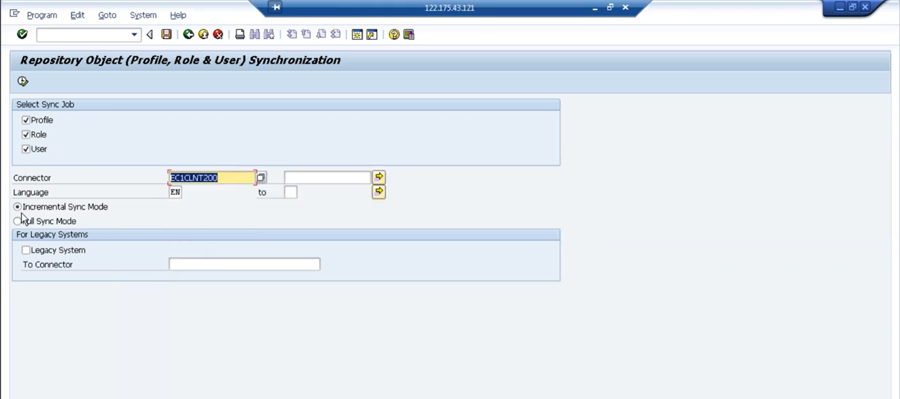
If anything failed, use T-Code SLG1 to view detailed logs.
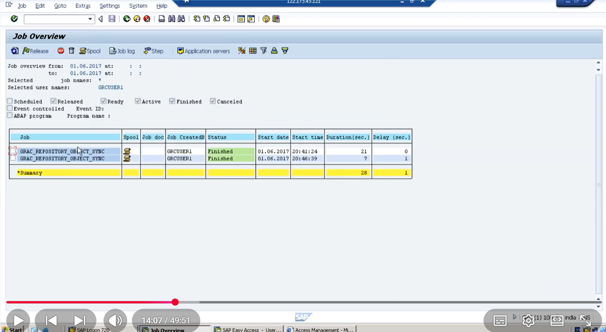
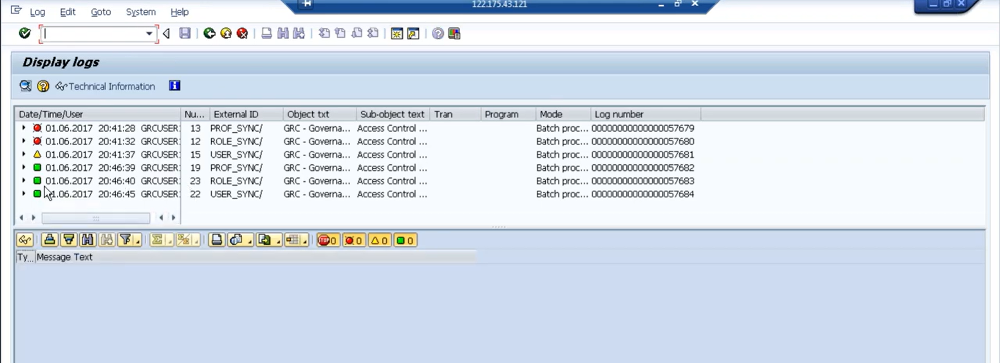
A Business Process represents a business area (e.g., Basis, Finance, Sales).
SPRO → GRC → Access Control → Maintain Business Process and Sub Processes
Navigate to the Setup tab in NWBC to access Access Rule Maintenance.
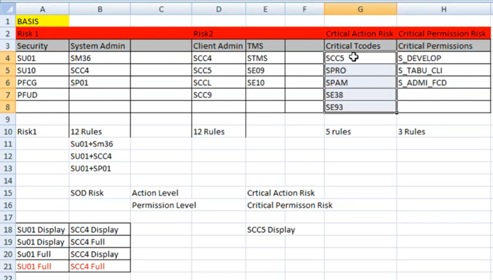
Function 1 — Security Administration
| T-Code | Description |
|---|---|
| SU01 | User Maintenance |
| PFCG | Role Maintenance |
| PFUD | User Master Comparison |
Function 2 — Client Administration
| T-Code | Description |
|---|---|
| SCC4 | Client Settings |
| SCC5 | Client Copy |
| SCCL | Local Client Copy |
| SCC9 | Remote Client Copy |
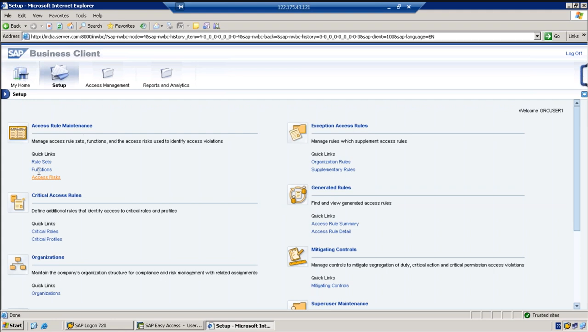
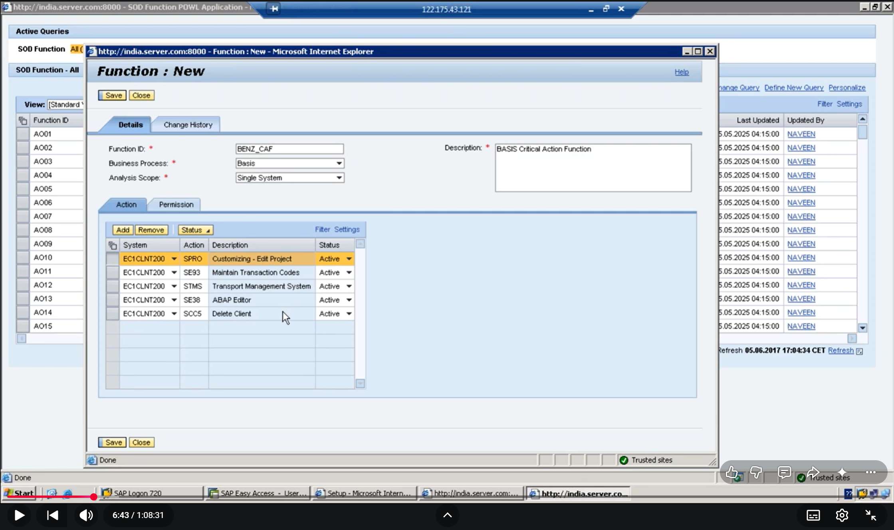
After creating functions, navigate to Access Risk to create a Risk ID combining both functions.
NWBC → Setup → Access Rule Maintenance → Access Risk
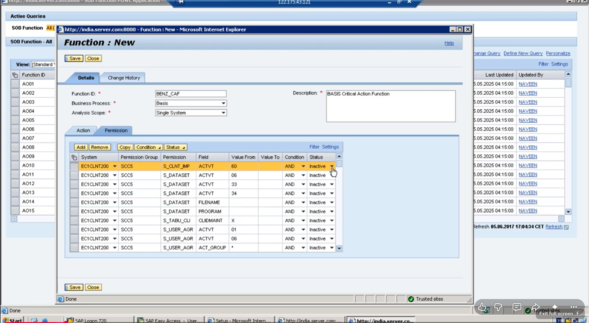
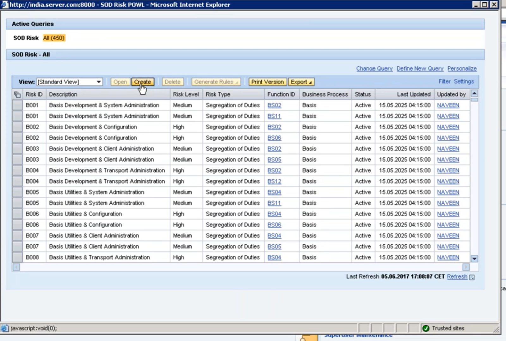
The number of Rule IDs generated equals the number of T-codes used in the function.
Navigate to Access Management → Access Risk Analysis → User Level to execute analysis.
NWBC → Access Management → Access Risk Analysis → User Level
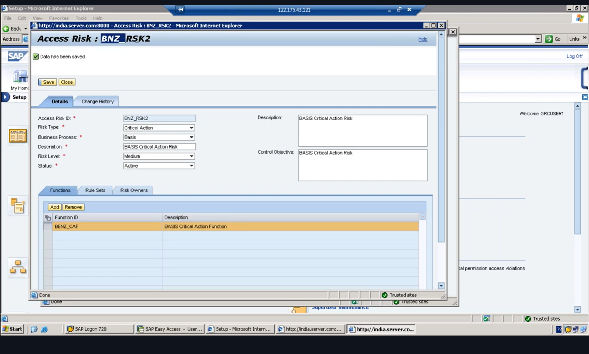
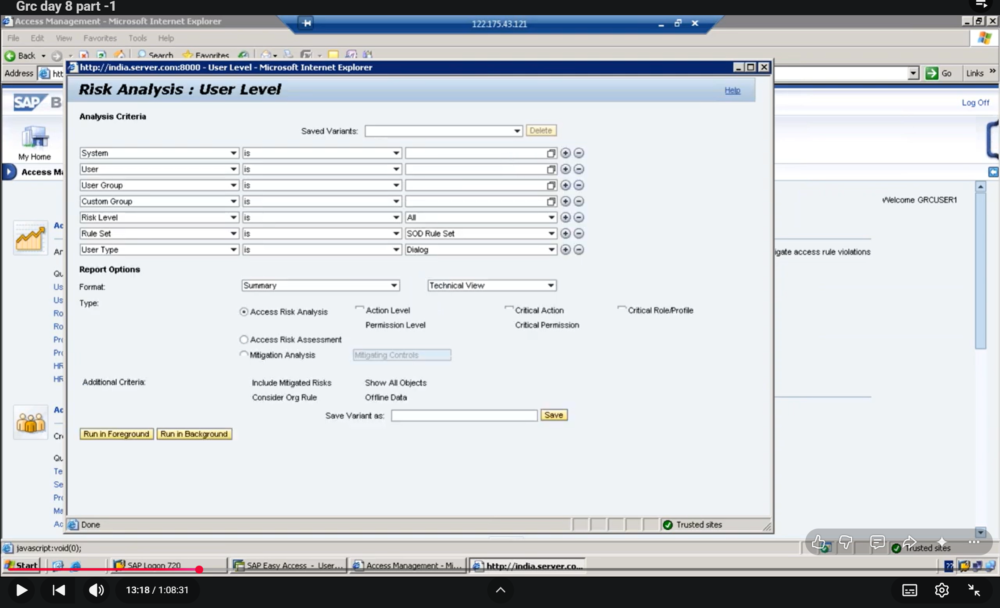
Why Is This a Risk? (BENZ_USER1 Scenario)
Using SU01 — the user can:
- Create / change users
- Reset passwords
- Assign powerful roles (e.g., SAP_ALL)
Using SCC4 — the user can:
- Change client settings
- Modify protection levels
- Change client control parameters
⚠️ SoD Violation
One person can create a powerful user, assign sensitive roles, change client settings, and bypass controls — all without anyone else's approval.
SoD Risk at Permission Level
SU01 Permission Objects:
- S_TCODE with TCD:
SU01 - S_USER_GRP with Activity:
01or02
SCC4 Permission Objects:
- S_TCODE with TCD:
SCC4 - S_TABU_DIS with Activity:
01or02& Auth Group:SS
Critical Risk Creation
Critical risks require understanding which business system you're working with (BASIS, BW, SD, etc.) because critical risk needs only one function.
Critical Action Risk
One function containing all critical T-Codes for the business process.
Critical Permission Risk
One function containing critical authorization objects, fields, and values.
Additional Reference Screenshot
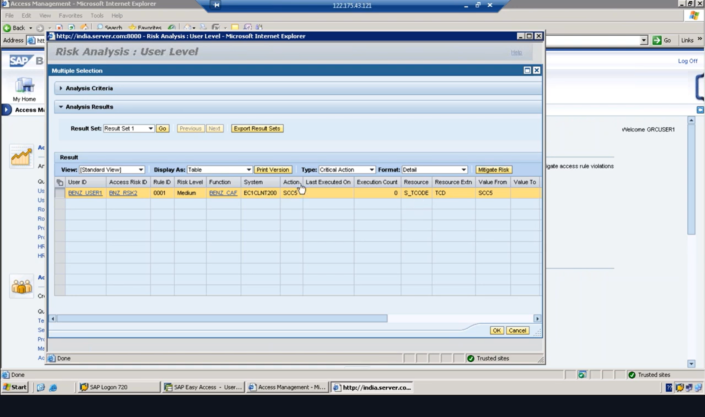
Quick Reference — Paths & T-Codes
| Action | Path / T-Code |
|---|---|
| Repository Object Sync | SPRO → GRC → Access Control → Sync Job |
| Check Sync Job Status | SM37 |
| View Error Logs | SLG1 |
| Create Rule Set | NWBC → Setup → Access Rule Maintenance → Rule Set |
| Business Process | SPRO → GRC → Access Control → Maintain Business Process |
| Create Function | NWBC → Setup → Access Rule Maintenance → Functions |
| Create Risk ID | NWBC → Setup → Access Rule Maintenance → Access Risk |
| Run Risk Analysis | NWBC → Access Management → Access Risk Analysis → User Level |
Interview Questions & Answers
Common SAP GRC ARA interview questions with clear, interviewer-friendly explanations.